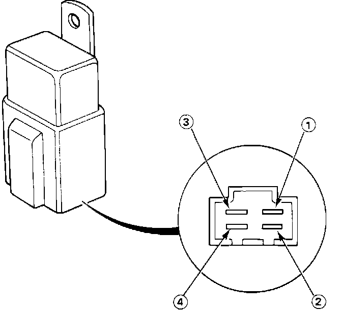

Condenser Fan Motor Relay: Testing and Inspection
Relay Testing:

NOTE: Same type of relay is used for compressor clutch, condenser fan, and radiator cooling fan.
1. Check that there is no continuity between terminals 3 and 4.
2. Connect 12V across terminals 1 and 2. There should now be continuity between terminals 3 and 4.
3. If not as specified, replace relay.